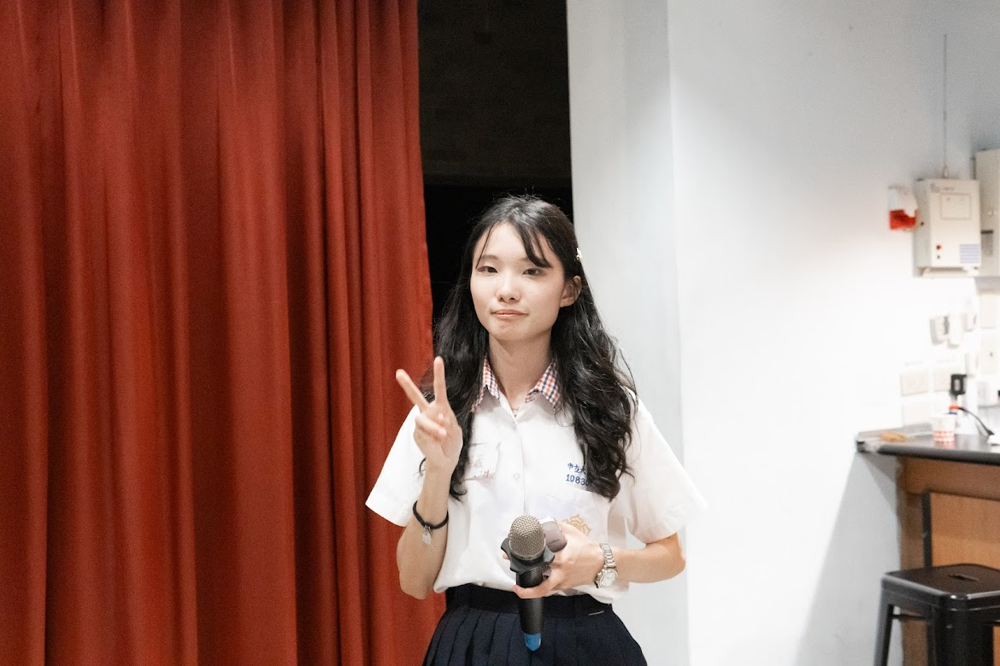
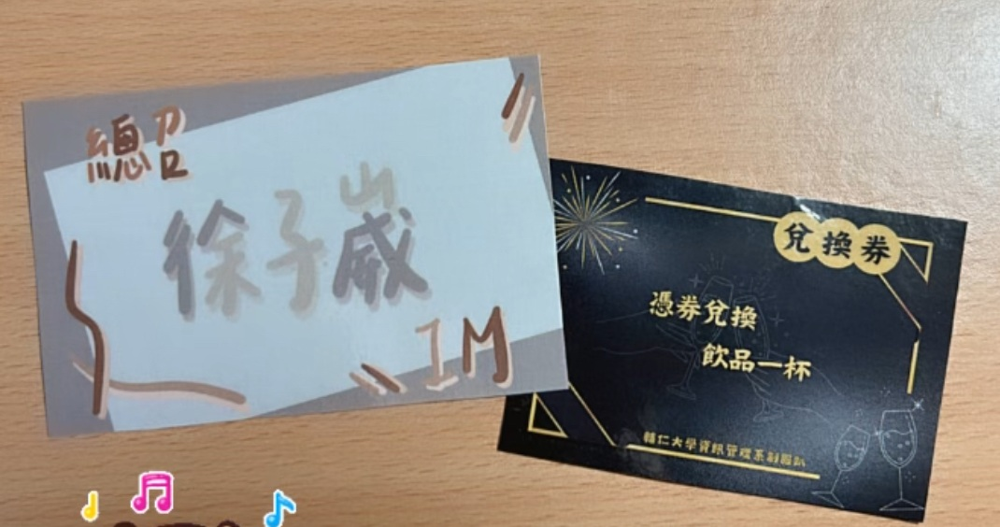
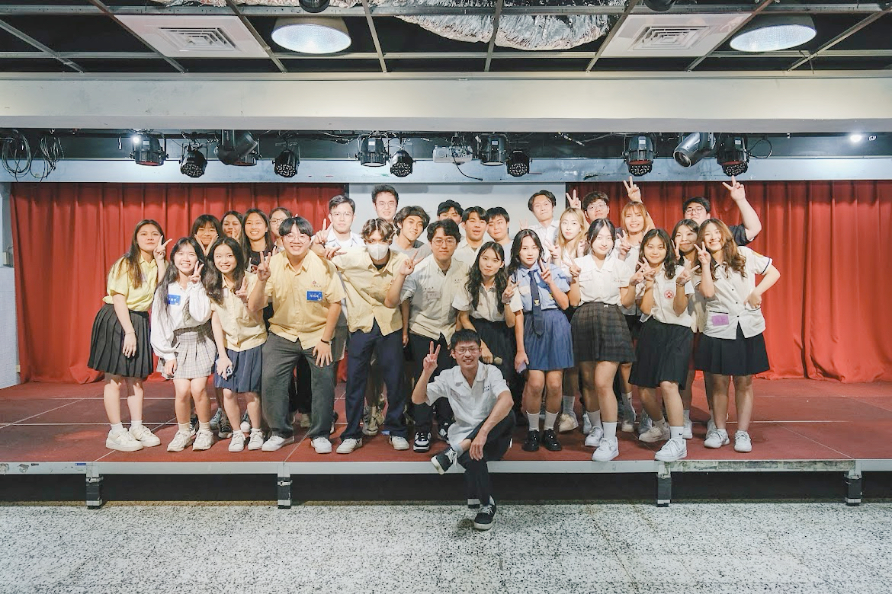
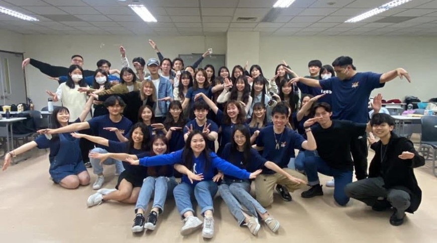
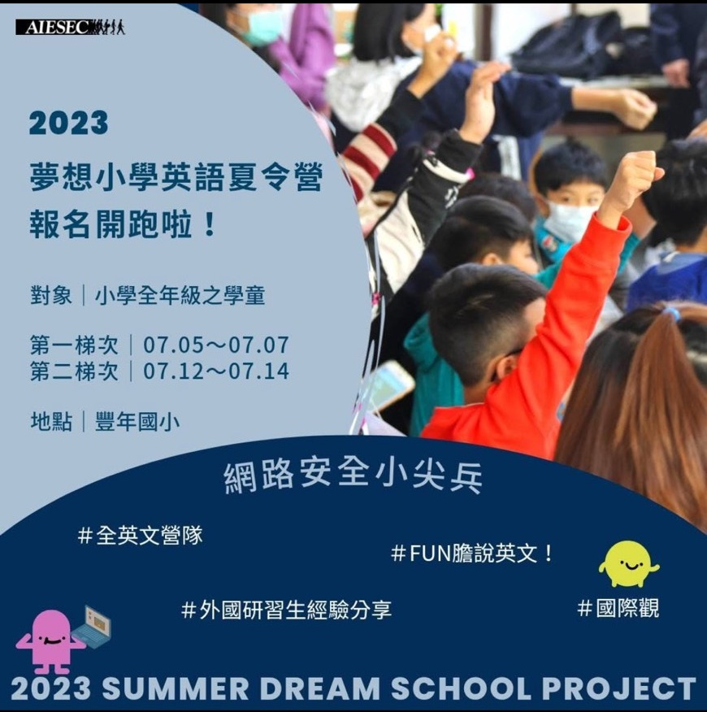
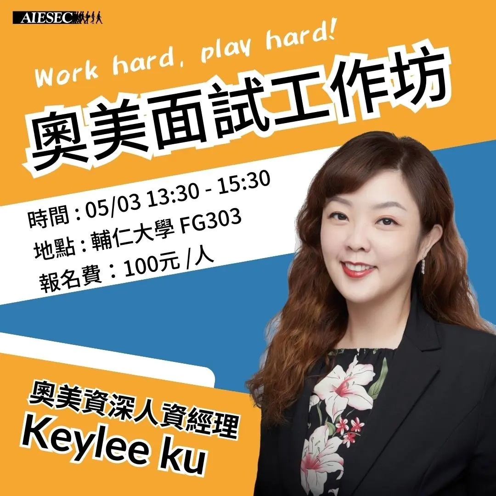

系學會
 這是我大二第一次在活動當籌備的工人，當時參考著前一年學長姐的做法，以一個小隊輔的身分帶著大一新生認識校園。這次活動主要目的是作為學弟妹破冰的橋梁，藉此拓展人際關係與尋找大學之中同行的夥伴。校園選課問題、舉辦活動的資訊或是打工賺取生活費的管道。
這是我大二第一次在活動當籌備的工人，當時參考著前一年學長姐的做法，以一個小隊輔的身分帶著大一新生認識校園。這次活動主要目的是作為學弟妹破冰的橋梁，藉此拓展人際關係與尋找大學之中同行的夥伴。校園選課問題、舉辦活動的資訊或是打工賺取生活費的管道。
 這是我大二第一次在活動當籌備的工人，當時參考著前一年學長姐的做法，以一個小隊輔的身分帶著大一新生認識校園。這次活動主要目的是作為學弟妹破冰的橋梁，藉此拓展人際關係與尋找大學之中同行的夥伴。校園選課問題、舉辦活動的資訊或是打工賺取生活費的管道。
這是我大二第一次在活動當籌備的工人，當時參考著前一年學長姐的做法，以一個小隊輔的身分帶著大一新生認識校園。這次活動主要目的是作為學弟妹破冰的橋梁，藉此拓展人際關係與尋找大學之中同行的夥伴。校園選課問題、舉辦活動的資訊或是打工賺取生活費的管道。
大學期間，第一次擔任 總召 ，從招工、編列預算、撰寫企劃書、拍宣傳影片，到7個工作小組開會，在有限的時間和精力之下，一遍一遍思考事前準備、舞蹈排練、遊戲的意義與趣味性，因為他們所參加的活動特別少，所以我希望這次活動可以帶給大一生美好的回憶。我設計了很多隱藏的小細節，例如用當下流行的MBTI分組、遊戲獎勵兌換方式及卡片都是我覺得讓這個活動更吸引人的地方，同時利用高中在大傳社的經驗，花5個小時畫分鏡表，1天拍攝，2小時做初步剪輯，最後交由秘書做最終剪輯和配樂，隔天跑班宣傳。即使在活動最後的【第一支舞】教學時，出了一些小插曲導致部分人員無法感受其意義，但是活動還是圓滿結束了，我也認知到多角度思考的重要性。
每一個活動的成功從不是一個人的獨秀，而是一個團隊的努力。籌備過程，團隊時常因為意見不合、標準不同而起爭執，但是因為大家都秉持著希望活動成功的心態而堅持。爭吵是因為看見的面向不同並無對錯，這也是彼此需要學習的一課。這次的活動除了帶給大一一些回憶，讓兩個班的人可以互相認識，也讓與我同屆的同學跨出舒適圈、增進感情，從陌生面孔到侃侃而談是我認為活動成功的一個象徵。
【學習分享】這次擔任總召的經歷，是我大學生活中最重要也最具挑戰性的一課。從零開始規劃整場活動，從招募工作人員、編列預算、撰寫企劃書、拍攝宣傳影片，到召集七個不同的小組開會協調，每一步都考驗著我的組織力與溝通能力。在時間與資源有限的情況下，我學會了如何精準分配精力、掌握進度、提前預想可能發生的問題。 我特別重視活動中的細節設計，從流行的 MBTI 分組法、創意遊戲獎勵機制到製作專屬卡片，這些看似微小的元素，卻是提升參與感與記憶點的關鍵。高中時期在大傳社學到的影片製作技巧，也讓我能高效率完成分鏡規劃與剪輯工作，進而提升活動的宣傳成效與整體質感。 過程中，我也深刻體會到「團隊合作」不只是分工合作，更是彼此尊重、磨合與共同成長。即使團隊中難免有意見分歧與摩擦，但大家都為了共同目標而堅持，也因此更加凝聚。這讓我明白，衝突不是壞事，而是促進溝通與多元觀點交匯的契機。 即使活動中也遇到教學流程出錯的小插曲，但看到參與者臉上的笑容、兩個班級逐漸熟絡起來，同屆夥伴從原本害羞到主動互動，這些轉變都讓我深深覺得，一切努力都是值得的。 這次活動不僅豐富了大一新生的回憶，也成為我自我成長的里程碑。我學會了從更多角度看待事情、理解他人，也更確信團隊的力量能創造出超越個人想像的成果。
Participating in AIESEC's Impact Conference, planning an interview with Ogilvy, and participating in the English Dream Primary School Camp, these three experiences are not just a collection of activities for me, but also a process of self-challenge and growth. First of all, at the Impact Conference, I deeply realized the importance of international perspective and leadership. Students from different schools and cultural backgrounds discussed social issues together at the conference, which taught me how to find consensus among diverse perspectives and made me realize that influence does not lie in how much you say, but in whether you can practice value with actions. I especially remember a workshop on sustainable development, which made me reflect on what changes I can bring to the world and inspired me to pay more attention to social impact in future projects.
Participating in the English Dream Primary School Camp was a human experience. In the process of interacting with the children, I found that language is not only the transmission of knowledge, but also the connection of emotions. By designing lively courses and activities, I not only improved my teaching and communication skills, but also regained the passion and motivation for learning. The children's smiles and the childish "Thank you" made me deeply understand that the influence of education can go beyond language.
When planning the job interview at Ogilvy, I learned how to connect with the industry with a professional attitude. We communicated back and forth with the industry contacts, and everything from the event process, venue arrangement to the reception details on the day was carefully planned. In the process, I practiced business letter writing, time management, and crisis handling skills, which made me understand that the so-called "professionalism" is not only about skills, but also about attitude and details.
大學期間，第一次擔任 總召 ，從招工、編列預算、撰寫企劃書、拍宣傳影片，到7個工作小組開會，在有限的時間和精力之下，一遍一遍思考事前準備、舞蹈排練、遊戲的意義與趣味性，因為他們所參加的活動特別少，所以我希望這次活動可以帶給大一生美好的回憶。我設計了很多隱藏的小細節，例如用當下流行的MBTI分組、遊戲獎勵兌換方式及卡片都是我覺得讓這個活動更吸引人的地方，同時利用高中在大傳社的經驗，花5個小時畫分鏡表，1天拍攝，2小時做初步剪輯，最後交由秘書做最終剪輯和配樂，隔天跑班宣傳。即使在活動最後的【第一支舞】教學時，出了一些小插曲導致部分人員無法感受其意義，但是活動還是圓滿結束了，我也認知到多角度思考的重要性。
每一個活動的成功從不是一個人的獨秀，而是一個團隊的努力。籌備過程，團隊時常因為意見不合、標準不同而起爭執，但是因為大家都秉持著希望活動成功的心態而堅持。爭吵是因為看見的面向不同並無對錯，這也是彼此需要學習的一課。這次的活動除了帶給大一一些回憶，讓兩個班的人可以互相認識，也讓與我同屆的同學跨出舒適圈、增進感情，從陌生面孔到侃侃而談是我認為活動成功的一個象徵。
【學習分享】
系學會

AIESEC

社團活動-撞球社&烏克麗麗社
很很感謝您願意花費寶貴時間瀏覽我的網站，旨在讓您更全面地了解我的背景、專業技能與經歷。作為大學新鮮人，雖然經驗尚淺，但我對未來充滿熱情與學習的動力，誠摯期待有機會與您面對面交流。